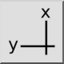
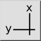
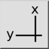
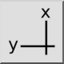

Ordinate (X/Y)
Toolbar / Icon:
 

Menu: Dimension > Ordinate (X/Y)
Shortcut: D, O
Commands: dimordinate | do
Toolbar / Icon:
 

Menu: Dimension > Ordinate (X/Y)
Shortcut: D, O
Commands: dimordinate | do
This tool draws an ordinate dimension. Ordinate dimensions indicate the X-ordinate or Y-ordinate of a feature in the drawing, relative to an origin point.